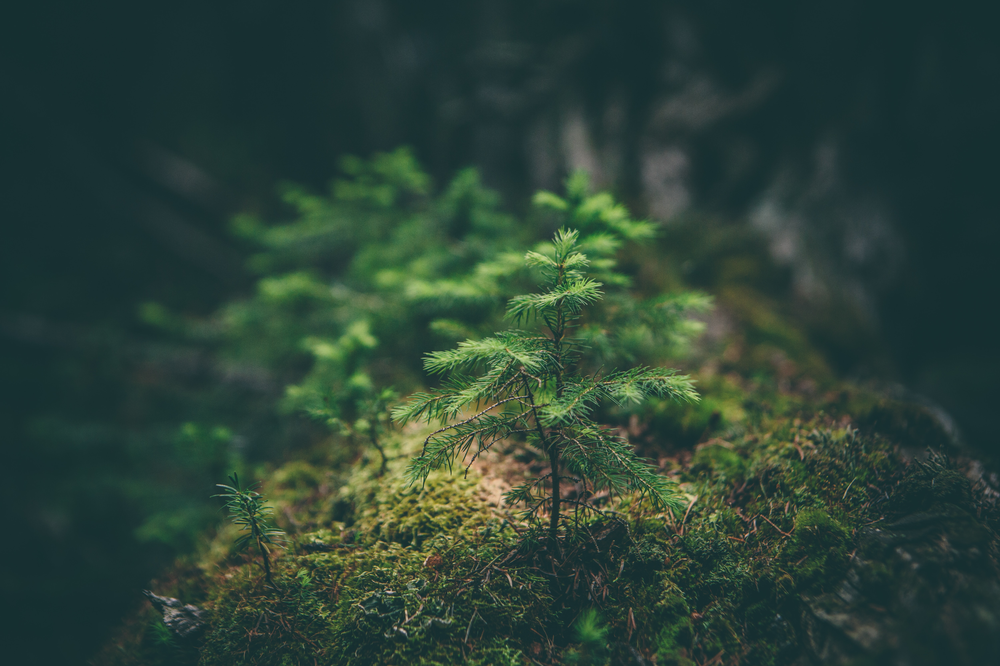

About Nature
Nature is a breathtaking masterpiece, a kaleidoscope of vibrant colors and delicate fragrances. It is an enchanting tapestry woven with the threads of towering trees, swaying gracefully in the gentle breeze. The symphony of birdsong fills the air, accompanied by the soothing whispers of leaves rustling in harmony. Majestic mountains reach towards the heavens, their snow-capped peaks piercing through the cotton candy clouds. Crystal-clear rivers cascade over smooth pebbles, their gentle murmurs creating a melodic rhythm. Fields of wildflowers sway like a painter's brushstroke, painting the landscape with hues of pink, yellow, and violet. Nature is a sanctuary, a place where one can find solace and be reminded of the awe-inspiring beauty that exists in every corner of our world.

Live With Nature
Immerse yourself in the beauty and tranquility of nature as you embrace a life intertwined with its elements. Live with Nature, where vibrant hues of green stretch as far as the eye can see, where the gentle whispers of the wind harmonize with the melodies of chirping birds. Discover the raw, untamed majesty of towering trees, their branches reaching towards the heavens, providing a sanctuary for wildlife to flourish. Breathe in the crisp, rejuvenating air, scented with the earthy fragrance of blooming flowers and the sweet aroma of freshly fallen rain. Feel the soft embrace of cool grass beneath your bare feet, connecting you to the earth's grounding energy. Let nature be your teacher, guiding you towards a simpler, more harmonious way of living, where each sunrise brings a renewed sense of wonder and gratitude. Live with Nature, and unlock the secrets of its gentle power, as it nurtures your soul and whispers the ancient wisdom of the natural world.